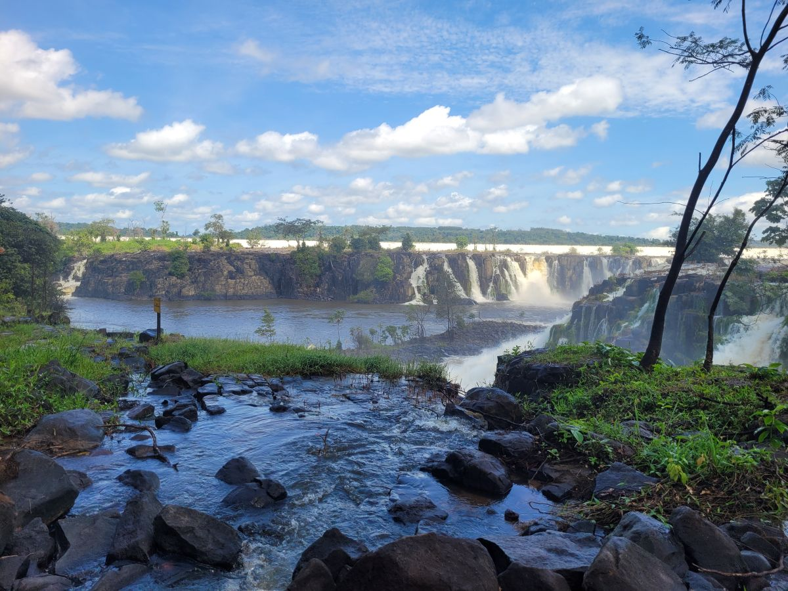
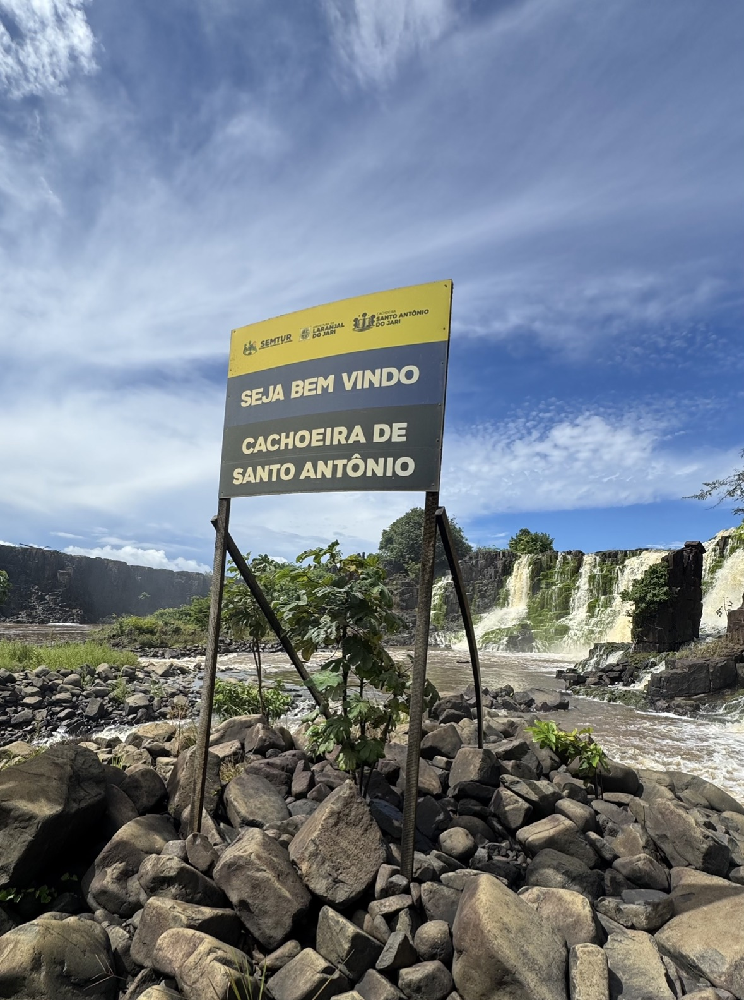
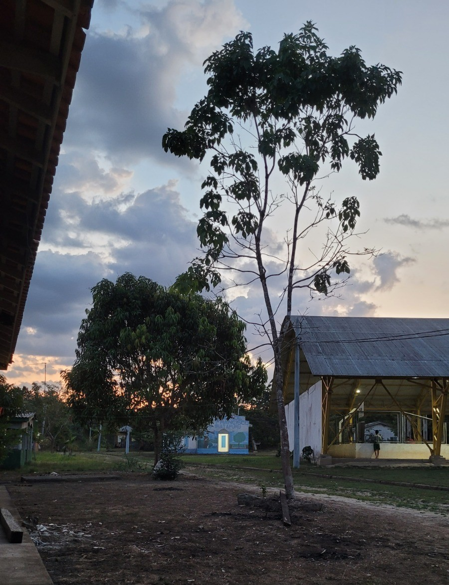

Laranjal do Jari, AP
Rota da Cachoeira
Uma imersão na cultura local com um banho revigorante nas quedas da Cachoeira de Santo Antônio.
Aventura, cultura e natureza te esperam no coração do Vale do Jari. Experiências únicas com segurança e conforto.

AventuraQuedas d'água impressionantes e piscinas naturais em um cenário de pura beleza amazônica.
 Cultural
Cultural
Um refúgio de paz e natureza, ideal para trilhas leves e banhos em igarapés de águas cristalinas.
 Ribeirinho
Ribeirinho
Vivencie o autêntico modo de vida ribeirinho na fronteira entre Amapá e Pará.
Criamos experiências que conectam você com a verdadeira essência da Amazônia.

Uma imersão na cultura local com um banho revigorante nas quedas da Cachoeira de Santo Antônio.

Aventura guiada pela floresta, explorando a biodiversidade e os sons da mata nativa.

Uma expedição de pesca completa no Rio Paru, com toda a estrutura para uma aventura inesquecível.

Uma imersão profunda na Reserva do Iratapuru, combinando trilhas, cultura local e a beleza do rio em uma experiência de ecoturismo autêntica.


Escolha o plano ideal para sua aventura no Vale do Jari.
R$ 899,00
Aventura guiada pela floresta, explorando a biodiversidade e os sons da mata nativa.
R$ 1.199,99
Uma imersão na cultura local com um banho revigorante nas quedas da Cachoeira de Santo Antônio.
R$ 1.050,00
Imersão na Reserva do Iratapuru. O valor é referente ao roteiro de 2 dias.
R$ 6.900,00
Uma expedição de pesca completa no Rio Paru, com toda a estrutura para uma aventura inesquecível.
Nossa equipe está pronta para ajudar a planejar uma experiência inesquecível na Amazônia. Entre em contato e vamos conversar!
Fale ConoscoExperiência autêntica com quem conhece a região.
Organização e cuidado em todos os passeios.
Do transporte à aventura, tudo pensado pra você.